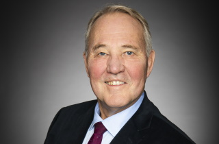
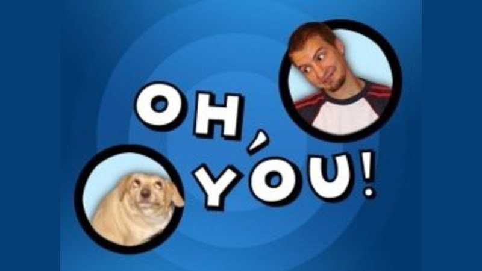
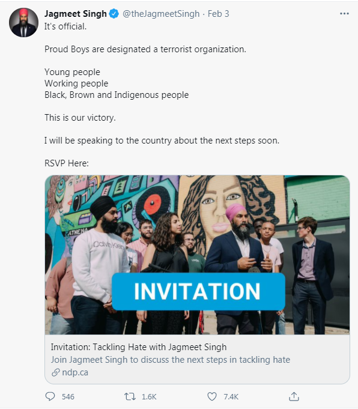

Canada Adds Proud Boys to Terrorist List
February 12th, 2021
MSN:
TDC_ARTICLE_START
The Canadian government added the Proud Boys, an extremist group with ties to white nationalism, to its list of terrorist organizations.
TDC_ARTICLE_STOP
This article was written by the above creature. Her name is N'dea Yancey-Bragg.
TDC_ARTICLE_START
Public Safety Minister Bill Blair announced Wednesday the Proud Boys were one of 13 groups now designated as terrorist organizations, including the Russian Imperial Movement and two neo-Nazi groups — the Atomwaffen Division and The Base.
“Canada will not tolerate ideological, religious or politically motivated acts of violence,” Blair said.
TDC_ARTICLE_STOP
Public Safety Minister Bill Blair
No, goy, they don't put BLM or Antifa in the category of "ideological, religious, or politically motivated acts of violence," but it's cute that you asked.

TDC_ARTICLE_START
Canada is the first country to designate the Proud Boys as a terrorist entity.
Designating a group a terrorist organization allows the government to seize its assets and increase terrorism-related penalties.
A government official said just because a person is a member of the organization doesn’t mean they will automatically be charged with a crime. But if that person was to engage in violent acts, they could face terrorism charges.
TDC_ARTICLE_STOP
Which is basically an admission that this is purely fiction. If the Proud Boys were a real terrorist organization, they would arrest every single member. Why don't they do this? Because the Proud Boys are not a Terrorist Organization, and would destroy them in court. However, in this case, they can have Antifa attack Proud Boys members, and then they add a 40 year prison sentence on top of
TDC_ARTICLE_START
Sending money to the organization or buying Proud Boys paraphernalia would also be a crime.
TDC_ARTICLE_STOP
Yeah this is probably illegal. Unfortunately, Proud Boys in Canada basically stopped existing back around 2018, and Gavin McInnes is a LOLcow, so this won't be challenged in court. The real purpose of this is to attempt to send a message to White People. It's important to remember that the reason this is happening is because the Proud Boys, while I like the members, are basically incompetently lead or just outright not lead here in Canada.
TDC_ARTICLE_START
The motion was introduced by the leader of the country's New Democratic Party, Jagmeet Singh, who urged Canadians to "keep the pressure on" Prime Minister Justin Trudeau and the federal government to formally add the group to the list of terrorist organizations, which includes Boko Haram, the Taliban and al-Qaida.
Singh celebrated the announcement, calling it a victory for young people, working people and Black, brown and Indigenous people on Twitter.
TDC_ARTICLE_STOP

So weird how the NDP, a party that pretends to stand up for working class people, is siding with every single Billionaire on the planet and attacking the Proud Boys, a legitimate group of Working Class Goys. It's almost like the NDP is just a bunch of Anti-Whites and Perverts. It's almost like that, because it is that.